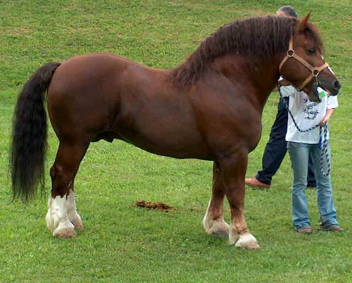

 Questo tipo particolare di cavallo da tiro, caratterizzato da una struttura pesante e un grande sviluppo muscolare scheletrico, risulta particolarmente adatto alla produzione di carne a causa della sua elevata velocità di crescita e al notevole sviluppo di masse muscolari. Questo tipo di cavallo è originario della pianura veneta, ferrarese e friulana e risale al 1860. Esso proviene dall’incrocio dapprima degli stalloni del Polesine, in un secondo momento anche con i purosangue inglese, Hackney e purosangue arabi, e infine, intorno al 900, anche con il Boulonnais, l’Ardennese il Nonfolk Bretone.